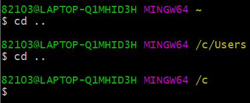
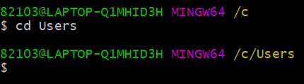
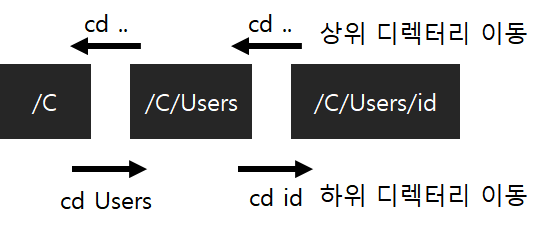
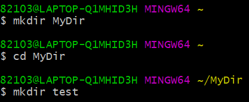
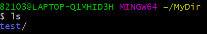
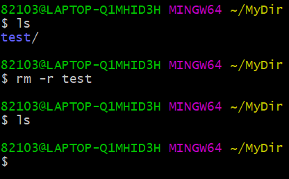
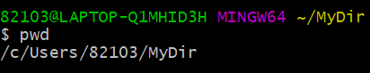

* 다음 포스팅은 깃(Git)의 사용방법에 대하여 정리한 것으로, 개인적인 공부 기록용으로 작성한 글 이기에 잘못된 내용을 포함하고 있을 수 있습니다.
* Window 운영체제를 기준으로 작성했습니다.
[목차]
#1 리눅스 디렉터리 기호
#2 디렉터리 이동
#2.1 상위 디렉터리 이동 : cd ..
#2.2 하위 디렉터리 이동 : cd Directory name
#3 디렉터리 생성 : mkdir
#4 디렉터리 목록 : ls
#5 디렉터리 삭제 : rm
#6 현재 디렉터리 경로 출력 : pwd
[Goal]
* 리눅스 디렉터리 관련 명령어에 대해 숙지
#1 리눅스 디렉터리 기호
터미널 창에서의 깃(Git) 명령어는 리눅스 명령과 동일하다. 따라서, 이번 포스팅 에서는 깃을 사용하기 위해 알아 두어야 할 기본적인 리눅스 디렉터리(=폴더) 관련 명령에 대해 정리 하고자 한다.
리눅스는 파일의 경로나 위치를 나타낼 때 약속된 기호를 사용한다. 약속된 기호는 다음과 같다.
| 기호 | 설명 |
| ~ | 사용자의 홈 디렉터리를 가리킨다. 홈 디렉터리 경로는 'C/User/UserID' 로 사용자 디렉터리 라고도 부른다. |
| ./ | 현재 사용자가 작업중인 디렉터리이다. |
| ../ | 현재 디렉터리 기준 상위 디렉터리이다. |
위의 3가지 는 매우 중요한 기초적인 기호들이기에, 반드시 암기해 두어야 한다.
#2 디렉터리 이동
디렉터리 이동은 "상위 디렉터리 이동"과 "하위 디렉터리 이동"으로 나뉜다.
#2.1 상위 디렉터리 이동 : cd ..
상위 디렉터리 이동 명령어는 "cd .." 이다. 다음은 홈 디렉터리에서 상위 디렉터리로 이동한 예시이다. 홈 디렉터리 경로는 /C/Users/유저이름 이기에, cd .. 명령을 2번 수행하면 Users 폴더를 거쳐 C로 이동한다. 참고로 cd는 Change Directory의 약자이다.

#2.2 하위 디렉터리 이동 : cd Directory Name
하위 디렉터리 이동 명령어는 "cd 디렉토리 이름" 이다. 다음은 c 폴더에서 Users 하위 디렉터리로 이동한 예시이다.
 
#3 디렉터리 생성 : mkdir
디렉터리 생성 명령어는 "mkdir 디렉터리 이름"으로 make directory의 약자이다. 다음은 홈 디렉터리 안에 MyDir 라는 디렉터리를 생성하고, MyDir 디렉터리로 이동해 test 라는 디렉터리를 생성한 예제이다.

#4 디렉터리 목록 : ls
현재 디렉터리의 목록을 확인하는 명령은 "ls"이다. ls 명령을 실행하니 #3에서 생성한 MyDir 안의 test 디렉터리가 출력된다.

ls명령은 -기호와 함께 옵션을 추가해서 사용할 수도 있는데, 대표적인 ls 옵션은 다음과 같다.
| 옵션 | 설명 |
| -a | 숨긴 디렉터리를 함께 표시한다. |
| -l | 디렉터리의 상세 정보를 함께 표시한다. |
| -r | 정렬 순서를 거꾸로 표시한다. |
| -t | 작성 시간 순으로 표시한다. |
#5 디렉터리 삭제 : rm
디렉터리 삭제 명령은 "rm 디렉터리 이름" 으로 remove의 약자이다.
-r 옵션과 함께 사용하면, 디렉터리 안의 하위 디렉터리까지 모두 삭제한다. 다음은 test 디렉터리와 하위 디렉터리까지 모두 삭제한 예시이다.

#6 현재 디렉터리 경로 출력 : pwd
현재 위치하는 디렉터리의 경로를 출력하는 명령어는 "pwd"이다. pwd는 "print working directory"의 줄임말이다.
